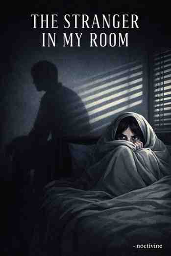

THE STRANGER IN MY ROOM
-noctivine
A Stranger in My Room
Noctivine
It all started on a Friday.
The same tired body…
and the memories of my broken love.
I thought, now I’ll start fresh.
I ate a little and went to bed.
I was so exhausted that I didn’t even realize when I fell asleep.
Then suddenly, my eyes opened.
I sat up.
I reached out to grab water from the table beside me…
and that’s when my eyes went to that corner of the room.
That same corner…
where I used to cry as a child.
There was a dark shadow there.
I looked carefully…
and saw a girl standing.
“Who are you?” I asked.
She didn’t say anything.
She just looked at me.
Her face was deeply sad.
But the moment I looked into her eyes…
a faint spark appeared.
“After so many years…” she said softly.
“Finally, you woke up.”
I asked again, “Who are you?”
She gave a small smile.
“Don’t you recognize me?”
As she said that, her expression changed…
like someone had poured cold water over my burned heart.
“I don’t know you,” I said.
Tears gathered in her eyes.
“Why would you remember…”
Then she said quietly,
“Come on… check your phone.”
My feet felt stuck to the ground.
But I don’t know why…
I listened to her.
I pressed the power button on my phone.
For a few seconds, everything seemed normal.
Then I noticed…
the wallpaper wasn’t mine.
And the time…
It was 2 AM.
I asked angrily, “Are you doing all this?”
“We,” she said.
Then she said something strange…
“Not me, Faizal… we.”
The moment she said my name…
a strange shiver ran through my entire body.
“My name…” I said softly.
“How do you know it?”
She looked into my eyes.
“What’s your name?” I asked.
She stayed silent for a moment, then said…
“What will you do after knowing my name?”
Then she said…
“I’m the one you kept searching for in everyone.”
“I don’t understand,” I said.
She held my hand…
and sat on the bed.
My body felt like it was moving on its own.
As if my will belonged to someone else.
She placed my head in her lap.
And gently ran her fingers through my hair.
Then she began to speak…
“It’s so hard, isn’t it…”
“When you put your entire world inside one person.”
“When you start seeing your future with them.”
“At first everything feels good…”
“Then slowly… everything gets taken away.”
She paused for a moment.
Then she said…
“In the happiness of meeting you…”
“I forgot the pain of being away from you.”
“How many times have I been separated from you…”
“How many times have I watched you break right in front of my eyes…”
And then, very softly, she said…
“Other than hope…”
“I couldn’t give you anything.”
I interrupted,
“Is all this a dream?”
She gave a faint laugh.
“Sometimes dreams…”
“are a million times better than reality.”
Then her voice grew heavier.
“But unfortunately…”
“this is reality.”
Hearing that, I started feeling sleepy.
The softness of her hands put me to sleep in her lap.
I don’t know who she was.
Had I met her before?
Why did everything about her feel so familiar?
And her words…
as if she was laying my past right in front of me.
Then suddenly, my eyes opened again.
I was still in her lap.
“You’re awake,” she said lovingly.
“Why isn’t it morning yet?” I asked.
“Morning…” she repeated.
“You want to wake up?”
“Yes,” I said.
“I have to go to college in the morning.”
She looked at me.
“You’ve forgotten everything,” she said softly.
“Remember… how you fell asleep.”
I got up from her lap and sat upright.
My hands and feet started trembling.
And suddenly I remembered…
To fall asleep…
I had taken all the sleeping pills at once.
An overdose.
That kills you, doesn’t it…
So how am I alive?
…
…
I remember…
The first time I got into a relationship was in high school.
It was teenage excitement.
Within a few months, my first love left me.
Everyone says first love never gets completed.
Mine didn’t either.
Maybe it could have…
maybe…
But I…
in trying to understand the beautiful body of a stranger,
I never truly understood myself.
In these five years, I’ve been in relationships twelve times.
Sometimes someone left me.
Sometimes someone betrayed me.
Every time, I felt like it was my fault.
Mine.
But the truth was…
I never really knew myself.
I kept searching for my “perfect partner” in all of them…
even though I didn’t even know who I was.
What I saw wasn’t love…
it was just need.
Comfort.
Understanding.
Acceptance.
A corner…
where no one judges you.
The whole world searches for that in a partner.
And so did I.
I got so trapped in red flags and green flags…
but maybe humans aren’t flags.
Situations can make a person do anything.
Make someone a hero.
Make someone a murderer.
And sometimes a person…
kills themselves with their own hands.
“Where did you go?” she asked lovingly.
I looked at her.
“When was the last time we met?”
She smiled faintly.
“I’ve met you many times…”
“But the first time…”
“I met you five years ago.”
“And a few months later, we got separated.”
“Where am I?” I asked.
She said…
“Where you probably should be.”
“By now… I should be dead,” I said softly.
She stayed quiet for a moment.
Then she said…
“Maybe you’re about to die.”
I panicked.
I started moving back.
She quickly said…
“Hey, don’t be scared.”
“I won’t kill you.”
Then she said…
“I’m the one…”
“you’ve been searching for these past five years.”
And in that moment…
I understood everything.
She placed my head in her lap again.
Ran her fingers through my hair.
And this time…
I truly fell asleep.
Author’s Note
And this time, what Faizal wanted…
he got it.
If not while awake…
then at least while asleep.
One Shot • Psychological Thriller
THE STRANGER IN MY ROOM

Story Description
A boy who’s been through too many endings. He’s looking for a corner. A place inside someone where he can breathe without explaining himself. A place that feels safe. Familiar. Quiet. One night, at 2 AM, he wakes up. a girl is standing.. She only looks at him… like she’s been waiting for him to finally wake up. After that night, nothing feels normal again.
Reading Mode
Scroll-friendly • Mobile-first
02:00